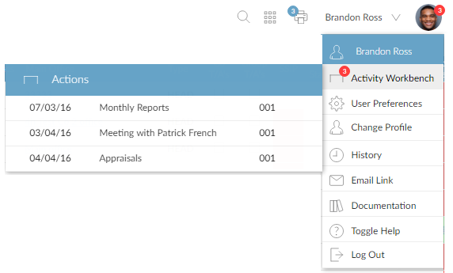
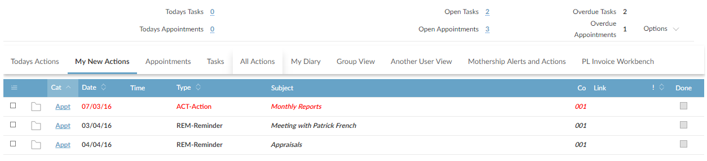

The Activity Workbench acts as a combined appointments
If new activities are assigned to you, the indicator on your profile picture (in the page header at the top of the screen) shows the number of activities: . If you move the mouse pointer over the image, the Activity Workbench popup menu shows the activities:

You can either:
Activity Workbench
The workbench has different views and various filters, allowing you to see, for example, all tasks and appointments for today, all new (unread) tasks and appointments, all outstanding tasks, multiple day view and other users' activities.
Use Action Types to set up the different types of appointments and tasks.
Use Activity Workbench Access Maintenance to control which other users' activities each user can see in the Activity Workbench.
See also How To Set Up Outlook Integration.